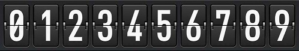

日期的获取
获取部分日期：年、月、日、小时、分钟、秒、毫秒
var oDate = new Date();
oDate.getFullYear(); = new Date().getFullYear();
oDate.getMonth() + 1;
oDate.getDate();
oDate.getHours();
oDate.getMinutes();
oDate.getSeconds();
oDate.getDay();
日期的设置
设置部分日期。
年（四位数）；月（0～11）；日（0～31）没有31天的月份写31会自动向上加；小时（0～23）；分钟（0～59）；秒（0～59）；毫秒（0～999）。
oDate加上日期的方法，oDate这个变量将改变日期，new Date()的日期不变。
new Date()的下面部分方法返回的都是毫秒数，从 1970 年 1 月 1 日至方法里日期的毫秒数。
setTime()能使用的，new Date()都能用，new Date()能在括号里加日期，setTime()不行；new Date(1111)==setTime(1111)，new Date(2017, 7, 1)有，setTime(2017, 7, 1)没有
2017.07.01 00:00:00 GMT+0800oDate.setTime显示为：
var oDate = new Date();
oDate.setFullYear(2008,6,1); ≠ new Date().setFullYear(2008,6,1);
setFullYear(年(必填),月(可选),日(可选))Tue Jul 01 2008 00:00:00 GMT+0800
oDate.setMonth(7,1);
setMonth(月(必填),日(可选))Tue Aug 01 2017 00:00:00 GMT+0800
oDate.setDate(10);
setDate(日(必填))Mon Jul 10 2017 00:00:00 GMT+0800
oDate.setHours(12);
setHours(小时(必填),分钟(可选),秒(可选),毫秒(可选))Sat Jul 01 2017 12:00:00 GMT+0800
oDate.setMinutes(12);
setMinutes(分钟(必填),秒(可选),毫秒(可选))Sat Jul 01 2017 00:12:00 GMT+0800
oDate.setSeconds(12);
setSeconds(秒(必填),毫秒(可选))Sat Jul 01 2017 00:00:12 GMT+0800
oDate.setMilliseconds(12);
setMilliseconds(毫秒(必填))Sat Jul 01 2017 00:00:00 GMT+0800
oDate.setTime(11111111111111)
setTime(毫秒(必填))Mon Feb 06 2322 03:45:11 GMT+0800
日期的显示
Date()显示当前日期和以特定的格式显示日期。
Date()没有方法只能显示当前时间并且为字符串，new Date()有方法能显示当前时间并且为object对象。
new Date()括号里可以放毫秒和日期（yyyy-MM-dd HH:mm:ss）后面可以使用方法。
2017.07.01 19:00:00 GMT+0800 显示为：格式：
Date(); Sat Jul 01 2017 12:00:00 GMT+0800全部显示
new Date(); Sat Jul 01 2017 12:00:00 GMT+0800
new Date(11111111111111); Mon Feb 06 2322 03:45:11 GMT+0800
new Date(2017, 6, 1, 12, 00, 00); Sat Jul 01 2017 12:00:00 GMT+0800
特定格式：
new Date().toDateString(); Sat Jul 01 2017周/月/日/年
new Date().toTimeString(); 19:00:00 GMT+0800时/分/秒 时区（24小时制）
new Date().toLocaleDateString(); 2017/7/1年/月/日
new Date().toLocaleTimeString(); 下午7:00:00时/分/秒 时区（12小时制）
new Date().toUTCString(); Sat, 01 Jul 2017 11:00:00 GMT周/日/月/年/时/分/秒
日期的其他方法
返回从 1970 年 1 月 1 日至今的毫秒数parse()和UTC()。
parse( 字符串)；UTC(日期或日期的方法)；
getTimezoneOffset()返回本地时间和 UTC 时间相差的分钟数
Date.parse('2017, 7, 1')1498838400000
Date.UTC(2017, 6, 1)1498867200000
new Date().getTimezoneOffset()-480
Date对象转换为字符串
toString()把Date对象转换为字符串
toLocaleString()根据本地时间格式，把Date对象转换为字符串
toTimeString()把Date对象的时间部分转换为字符串
toLocaleTimeString()根据本地时间格式，把Date对象的时间部分转换为字符串
toDateString()把Date对象的日期部分转换为字符串
toLocaleDateString()根据本地时间格式，把Date对象的日期部分转换为字符串
日期的显示和设置都有UTC方法，如 有getDate()和setDate()就有getUTCDate()和setUTCDate()。还有一个toUTCString()。
